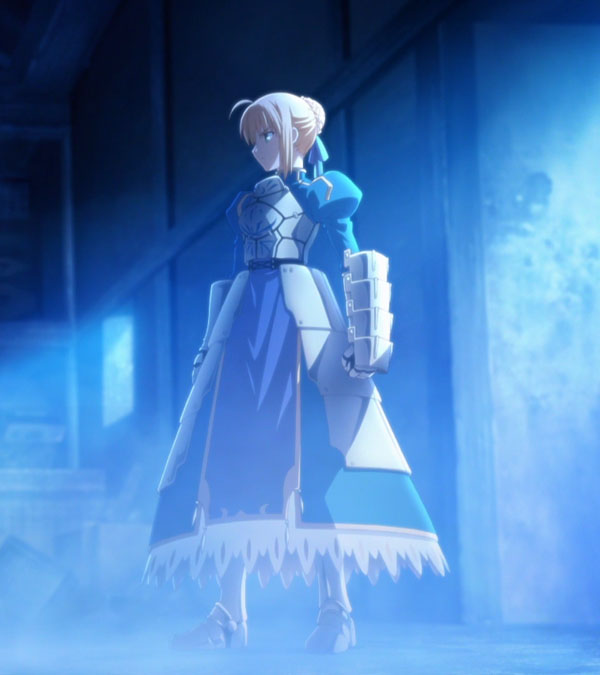

|
あなたは【 儀式 】に【 サーヴァント 】として参加する。
――ところで、あなたたちの参加する【 儀式 】はマスターとサーヴァントの「相性」が重要になるらしい。
あなたとマスターの間に面識があれば、きっとその点は問題ないだろう。 |
 |
・【朝】を迎える。
・バトルが３ラウンド経過する。
・サーヴァントが復活Ｂを行う。
現界コストは基本的にサーヴァントが支払うものだが、サーヴァントと同エリアにマスターがいるならばマスターが支払うこともできる。
サーヴァントが支払う場合、現界コストはマスターが支払う場合の倍となる。